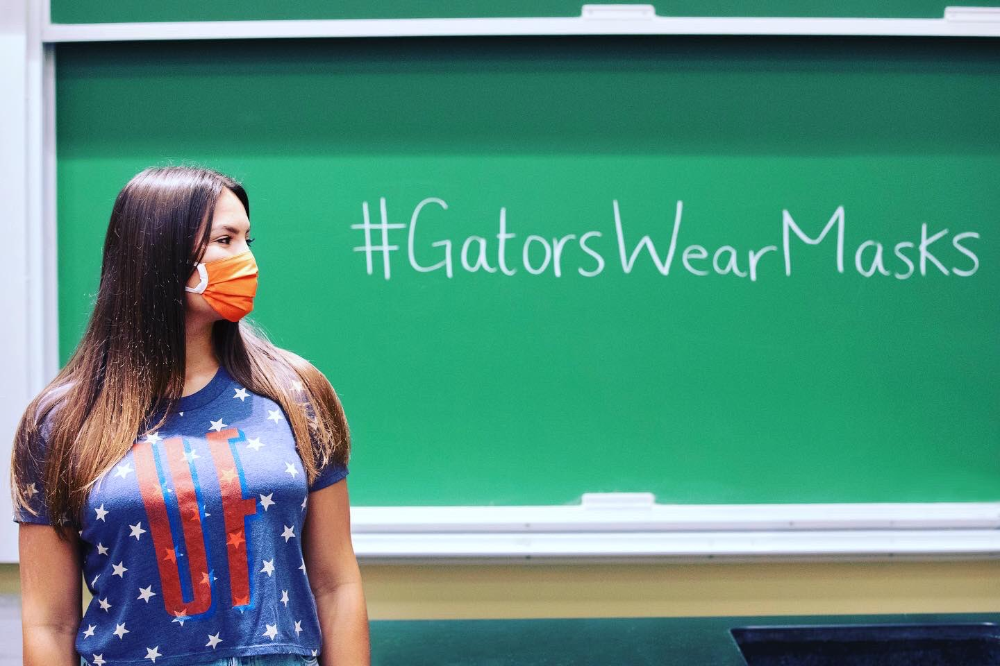
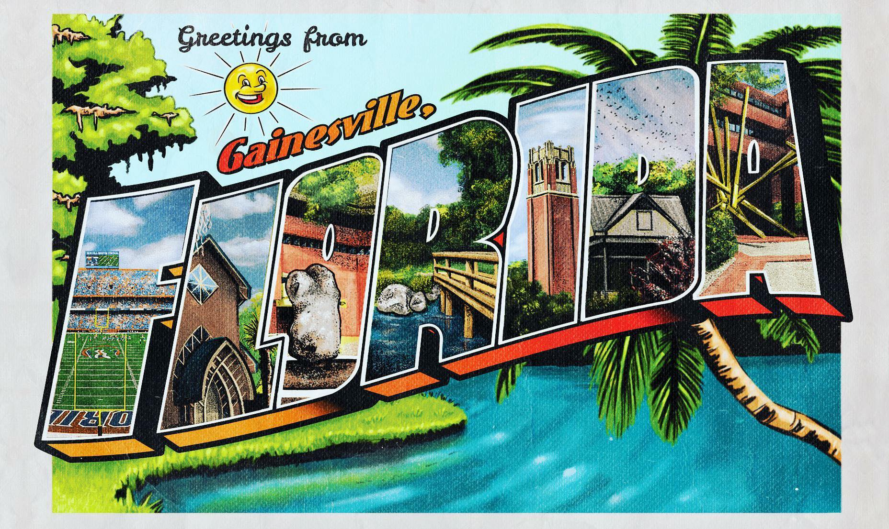
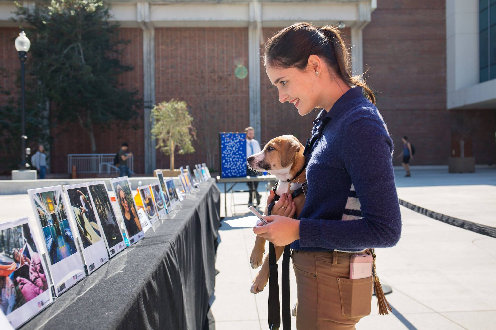
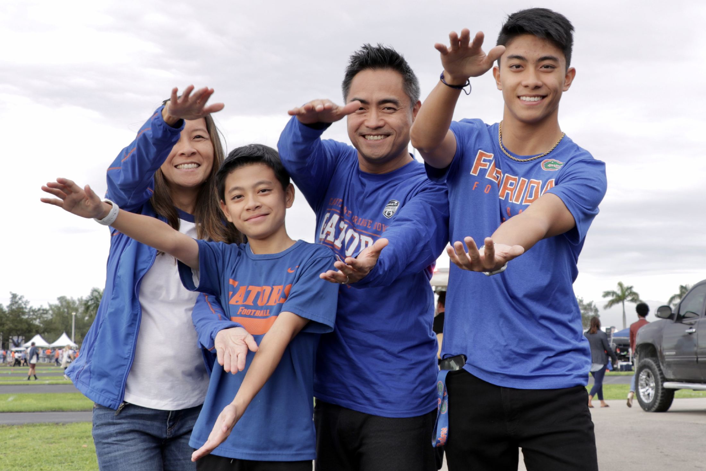
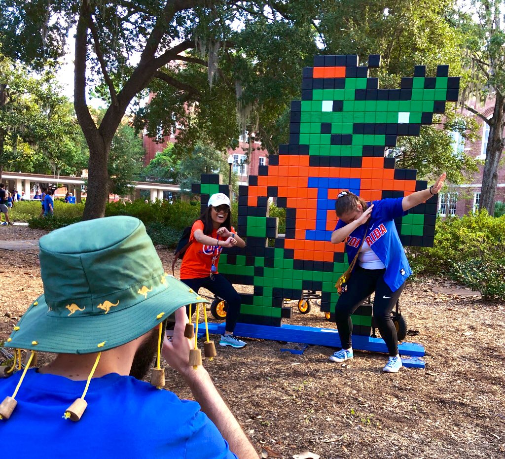
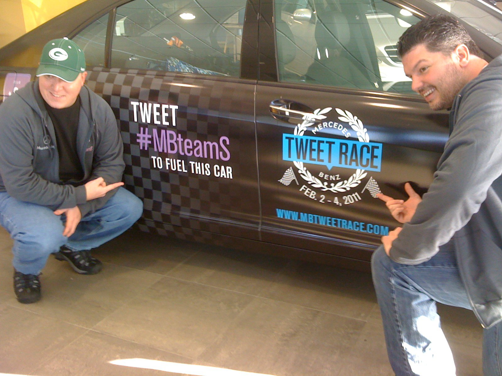

I fell in love with social media before it had a job title. By the time it finally did, I was teaching the class.*
Inaugural Director of Social Media at two universities. Recognized in Wired and The Chronicle of Higher Education. Work that's so viral it ends up in a CDC study, so relatable it's top of mind at commencement, and so prestigious it's worthy of the president's office.
From 500K to 2M
Quadrupled UF's social following
Won a car
...on a social network that no longer exists
read more →
First on TikTok
First university verified on the platform
read more →
Work

#GatorsWearMasks
81M impressions. 98% mask compliance. A CDC study confirmed it worked.

Greetings from Gainesville
A postcard activation that reached 41 states and 34 countries.

Gallery 1853
Photos on social that became a real art show, a book and a display in the President's Office.

Orange Bowl Blitz
LED trucks, billboards and a real-time stream of UGC generating 1.1M Twitter impressions in 24 hours.

GIFs FTW!
7 billion GIF views, outpacing Google, Nike, Facebook, Starbucks and Taco Bell on Giphy.

Tweet Race
Defeated Serena Williams. Raised $50K for St. Jude. Won a car on Twitter.
*Playing on social since 2005, adjunct professor since 2014.
Learn more about Todd